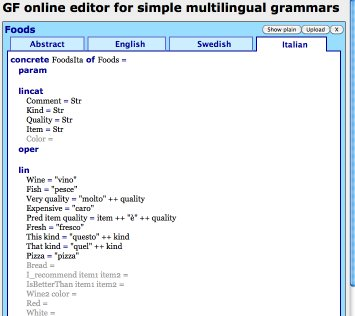
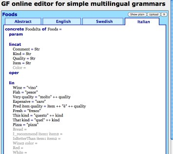

GF online editor for simple multilingual grammarsGF online editor for simple multilingual grammars
GF online editor for simple multilingual grammarsGF online editor for simple multilingual grammars![[GF online editor screen shoot]](P/w3s.jpg) 

In contrast, the GF online editor for simple multilingual grammars is available online, making it easier to get started. All that is needed is a reasonably modern web browser. Even Android and iOS devices can be used.
The editor also guides the grammar author by showing a skeleton grammar file and hinting how the parts should be filled in. When a new part is added to the grammar, it is immediately checked for errors.
Editing operations are accessed by clicking on editing symbols embedded in the grammar display: +=Add an item, ×=Delete an item, %=Edit an item. These are revealed when hovering over items. On touch devices, hovering is in some cases simulated by tapping, but there is also a button at the bottom of the display to "Enable editing on touch devices" that reveals all editing symbols.
In spite of its name, the core of the editor runs in the web browser, so once you have opened the web page, you can continue editing grammars even while you are offline. Grammar compilation & testing and some error checking is done by the GF server and is not available while offline.
At the moment, the editor supports only a small subset of the GF grammar notation. Proper error checking is done for abstract syntax, but not (yet) for concrete syntax.
The grammars created with this editor always consists of one file for the abstract syntax, and one file for each concrete syntax.
SyntaxL, ParadigmsL,
LexiconL, SymbolicL
and ExtraL,

 Grammars in the
cloud
Grammars in the
cloud
There is no automatic synchronization between local grammars and the cloud.
Instead, the user should press
to upload the grammars to the cloud, and press
to download grammars from the cloud. In both cases, complete grammars
are copied and older versions at the destination will be overwritten.
When a grammar is deleted, both the local copy and the copy in the cloud
is deleted.
Each device is initially assigned to its own unique cloud. Each device can thus have its own set of grammars that are not available on other devices. It is also possible to merge clouds and share a common set of grammars between multiple devices: when uploading grammars to the cloud, a link to this grammar cloud appears. Accessing this link from another device will cause the clouds of the two devices to be merged. After this, grammars uploaded from one of the devices can be downloaded on the other devices. Any number devices can join the same grammar cloud in this way.
Note that while it is possible to copy grammars between multiple devices, there is no way to merge concurrent edits from multiple devices. If the same grammar is uploaded to the cloud from multiple devices, the last upload wins. Thus the current implementation is suitable for a single user switching between different devices, but not recommended for sharing grammars between multiple users.
Also note that each grammar is assigned a unique identity when it is first created. Renaming a grammar does not change its identity. This means that name changes are propagated between devices like other changes.
[October 2012: this is an experimental feature that might be replaced by an incompatible grammar sharing mechanism in the future.]
The grammar cloud also includes a list of public grammars. Grammars can be added to the public list by pressing the Publish button shown next to the grammars in the list of your grammars.
The Publish button creates copy of your grammar. If you continue to edit your grammar, the changes will be local only. You can press the Publish button again to update the public copy.
You can remove a grammar from the public list by pressing the × button next to the grammar in the public list. You can not remove grammars published by other users.
When you open a public grammar published by another user, a copy of the grammar is added to the list of your grammars. Any changes will be made in your own copy of the grammar. If you publish your copy of the grammar, it will appear separately in the list of public grammars. You can not overwrite grammars published by other users, even if they have the same name.
TODO: Publishing grammars that inherit form other grammars is not recommended. There is no way to indicate which of several grammars with the same name is being inherited.
TODO: There should probably be a way to identify who published a grammar and when. Maybe the publish button should be restricted to registered users...
By developing a GF server with an appropriate API, it should be possible to extend the editor to support a larger fragment of GF, to do proper error checking and make more of the existing GF shell functionality accessible directly from the editor.
The current grammar cloud service is very primitive. In particular, it is not suitable for multiple users developing a grammar in collaboration.